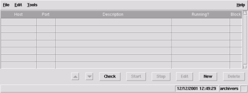
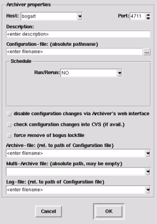
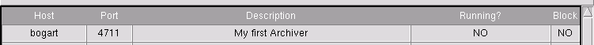
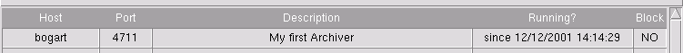

Some of the steps reflect typical unix commands, but you should easily figure out the appropriate Windows actions...
Install the CAManager Software (see INSTALL.txt in the source-directory or the corresponding html-version)
Pick an already existing archive-directory or create a new
directory (let's say /tmp/TestArchive) and create a
configuration file in there (for now it's ok, if it's
empty).

> mkdir /tmp/TestArchive
> touch /tmp/TestArchive/main.cfg
start CAManager
> CAManager
A window like the one on the right will appear.
To create a new archiver configuration click the [New] button and the following dialog will pop up.
Note that the entry in the Host-field will reflect the hostname of the machine CAManager is currently running on. 
Enter proper configuration values
Select a schedule
example A:
If you for example want that our archiver is restarted every 8
hours (every shift) and we want to keep 4 shifts of archived
data, you should do the following:
example B:
If you want to restart your archiver every week Mondays at
2am and keep all archives online, you should instead do this:
[optional] Check any of the next three items if appropriate
Select an archive file
This is a pattern for the directory structure where the archiver should put it's data.
You can drop down a list of suggestions by clicking the small down-arrow on the right side.
For example A (that is to use/reuse 4 archives), you
should enter %4/directory,
for example B
(to keep all archives and separate them by year/week#),
%Y/%V/directory is fine.
[optional] If you want each archive to be added to an external multi-archive, you should set multi-archive file to the corresponding file.
You have to set the log file as well. You can again pick one of the suggested ones.
Close the properties dialog by clicking OK
After a few seconds, you should see the following warning dialog.
CAManager just found that you configured an archiver,
but currently have no CAbgManager running to monitor
whether the archiver is running or not.
You should select [Start] to get the whole process running.
Save your current configuration (File-menu -> Save)
After a few seconds, the appropriate line in the main dialog should change from (every field blinks red on change)
to
You can observe the status of CAbgManager via it's web-interface. By default, it is accessible as http://localhost:4610/ from your web-browser, but you can change the port number (and many other parameters) in the Properties dialog (Edit-menu -> Properties -> bgManager)
CAManager is no longer necessary to keep the ArchiveEngine running.
You just configured your first Archiver and got it running.
Of course, if you just created an empty configuration and didn't use an existing one, you'll have to set up the configuration file for your ArchiveEngine properly.
You can either
Use the ArchiveEngine's web-interface to add channels to the
archiver.
In the default configuration you should be able to enter http://localhost:4711/ in your
favourite web-browser an get access to the ArchiveEngine itself.
Click and hold the right mouse button on the archiver entry in the main window. Select View/Edit Configuration in the popup menu.
The simple editor window that opens lets you create and save a simple configuration manually (refer to the ChannelArchiver documentation about the syntax of the configuration file).
Once you save a configuration and close the editor, you have to
restart the archiver.
Do that by just selecting the archiver in the main window and
pressing the [Stop] button.
The archiver will be stopped soon and CAbgManager will restart it with the new configuration within a few seconds.